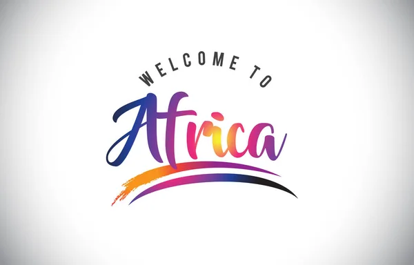

Explorez La Richesse Culturelle De L'Afrique
Découvrez la musique, la gastronomie, la mode, les films et l'histoire qui font de l'Afrique un trésor culturel.
Culture Africaine
Musique Africaine
Explorez la richesse rythmique et mélodique de la musique africaine.
L'une des richesses indéniables de L'Afrique c'est bel et bien sa musique.
Cette dernière tire son inspiration des traditions ancestrales véhiculées oralemment
Elle est savamment executée par le biais d'instruments variés qui ajoutent une touche
( à travers les contes,fables et légendes).tout à fait particulière et font ainsi la fièrté du continent;
Parmi ces instruments ont distingue:Mvet,le Balafon,Le Gong,la Kora,le Djembé...etc
Comme genres musicaux propres au continent,nous avons:Le Bikutsi,le Zouglou,l'Afrobeat,le Makossa,le Ndombolo...
En savoir plus

Gastronomie Africaine
Découvrez la diversité culinaire de l'Afrique à travers ses saveurs authentiques.
L'Afrique regorge d'un potentiel culinaire énorme.Sa gastronomie est d'une immense richesse
Bien que souvent très épicés,les plats africains se distinguent par des techniques de préparation
tout à fait singulières.Parmi ces plats africains nous vous proposons:
En savoir plus

Mode Africaine
Plongez dans l'univers de la mode africaine et ses créations uniques.
Loin d'etre un simple moyen de couvrir sa nudité,l'habit est perçu aussi en Afrique
comme un moyen d'affirmer son identité culturelle.L'art vestimentaire africain dépend de l'appartenance ethnique,du rang social,
du genre,des convictions réligieuses ,...etc
Dans cet article, nous vous proposons quelques modèles de vetements:
En savoir plus

Films Africains Culturels
Explorez des films captivants qui mettent en lumière la richesse culturelle de l'Afrique.
Puisque le cinéma est aussi partie intégrante de la culture,on ne saurait parler de la culture
africaine,sans tout fois mentionner ce pan important de son riche patrimoine.
De jour en jour,L'Afrique se bat pour donner au monde une image des plus réluisantes
de sa culture.Plusieurs films africains ont reussi à s'imposer sur la scène internationnale.
Ici on ne fera mention que de quelques uns
En savoir plus
Histoire De La Culture Africaine
Découvrez les récits passionnants qui ont façonné la riche histoire culturelle de l'Afrique.
L'Afrique, berceau de l'humanité, est imprégnée d'une richesse culturelle et d'une diversité exceptionnelles.
Des traditions ancestrales, des langues variées, une multitude de styles artistiques, et une musique vibrante
convergent pour former un tissu culturel complexe et fascinant. Chaque région du continent abrite des coutumes
uniques,des expressions artistiques distinctes, et des histoires captivantes, contribuant ainsi à la mosaïque
culturelle qui définit l'identité africaine. Cette diversité culturelle reflète la résilience, l'innovation et
la profonde connexion entre les peuples africains et leur patrimoine riche et diversifié.
En savoir plus

© 2024 Culture Africaine. Tous droits réservés.
↑ Retour en haut ↑